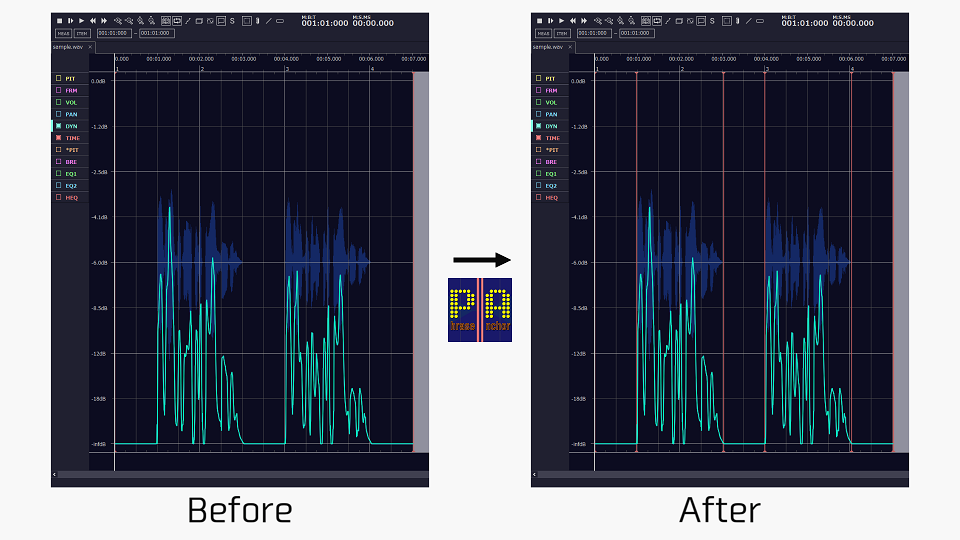

Phrase Anchor
※本アプリはベータ版を公開中です。
正式リリース時に使い方や利用規約などの大幅変更がある可能性がありますので都度ご確認下さい。
ダウンロード
追記：2026/01/05 プロジェクトファイルの読み込み時に "Dll was not found" エラーが発生する不具合を修正しました。
ダウンロード (パッケージ版)
アプリ概要
本アプリは VocalShifter のプロジェクトファイルを読み込み
無声になっている箇所の始点、終点に TIME 制御点を追加するツールです。

利用規約
- 本アプリはフリーソフトウェアです。
- 本アプリは商用、非商用問わず使用可能です。
- 本アプリを使用することで生じた不具合、トラブル、損害等に関してアプリ製作者は一切の責任を負わないものとします。
- 本アプリを起動した時点で、本規約に同意したものとみなします。
セットアップ方法
※パッケージ版を使う場合は不要です。
- ".NET6 Desktop Runtime" のインストール
本ツールは .NET6 Desktop Runtime が必要です。
インストールしていない場合は下記のサイトからインストーラを入手してインストールして下さい。
ダウンロード (.NET Desktop Runtime 6.0.20)
使い方
PhraseAnchor.exe を起動し下記手順で操作して下さい。
- プロジェクトファイルの読み込み
[ファイルを開く] ボタンで .vshp ファイルを開いて下さい。
- TIME 制御点生成のパラメータ（閾値）設定
- 2-1. TIME 制御点を自動生成するアイテムを選択して下さい。
と、記述のある表にて生成させたいアイテムの行にある [処理対象] にチェックを入れて下さい。
- 2-2. TIME 制御点の生成条件設定
TIME 制御点が意図しない箇所に生成されたり、まったく生成されない場合にこの項目の値を調整して下さい。
おおまかな調整方針「区間の長さ[ms]：制御点生成しない」に 50 ～ 100 を入れ、出力結果を見ながら微調整してみて下さい。
- 区間の長さ[ms]：制御点生成しない
一瞬だけ無声になっている個所に制御点を生成したくない場合に設定して下さい。
- 区間の長さ[ms]：1点だけ生成
一瞬だけ無声になっている個所に制御点を生成したいけれど2点生成してほしくない場合に設定して下さい。
- DYN[ms]
ほぼ無声なものの完全に無声でない個所を無声扱いとしたい場合に設定して下さい。
※無声判定は調整後の DYN の値で判定してる為、VocalShifter で DYN を修正することでも調整ができます。
- プロジェクトファイルの書き出し
[名前を付けて保存] ボタンにて出力先を指定することで
TIME 制御点が追加されたプロジェクトファイルが出力されます。
トラブルシューティング
- アプリ起動時に "Yout must install .Net Desktop Runtime to run this application." と表示される
.NET6 Desktop Runtime のインストールが正しく行えていない可能性があります。
.NET Core Runtime や .NET Runtime などではなく、 Desktop版がインストールされているか確認して下さい。
※ver.6.0.20 で動作確認済。
やれたらやるわ～くらいの予定（今後対応したいこと）
- プログラムの改修。
- UI の改修。
- プロジェクトファイル読み込みのドラッグアンドドロップ対応。
- .NET のバージョン更新。
- （対応済み）.NET Desktop Runtime インストール不要なバージョンの提供。
ライセンス